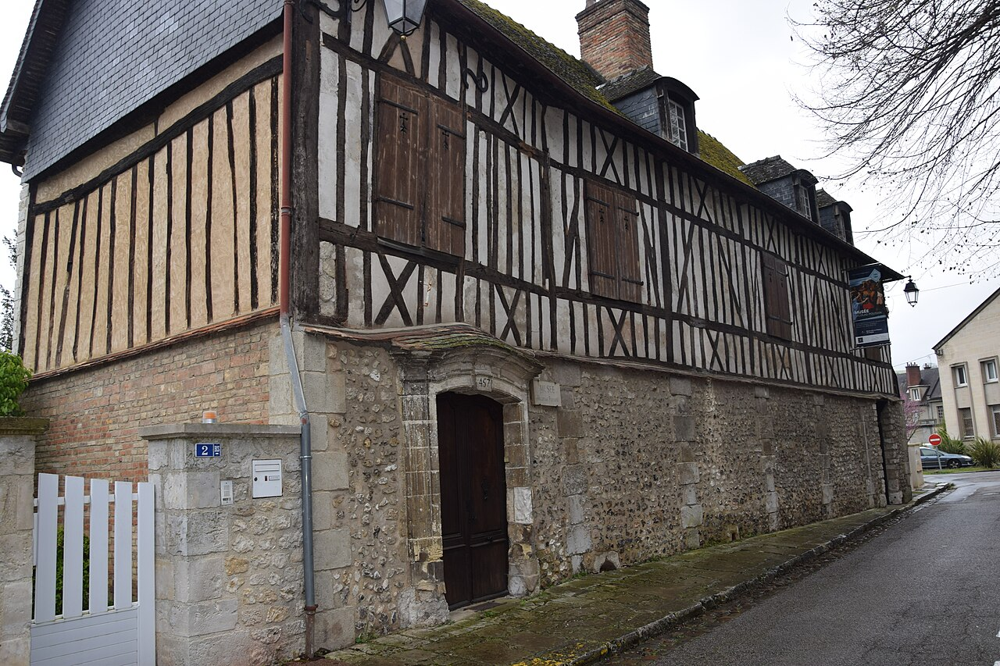

Musée Nicolas Poussin aux Andelys : collections, tarifs et horaires 2026
Dans cette fiche
L’essentiel pour visiter
Installé dans une demeure du XVIIIe siècle, ce musée réunit peinture classique, archéologie, mobilier ancien et mémoire locale. Il conserve notamment Coriolan supplié par sa famille, peint en 1652 par Nicolas Poussin. En octobre 2026, ouverture de 14 h à 18 h, sauf le mardi, jusqu’au 1er novembre.


NICOLAS POUSSIN
Nicolas Poussin, enfant des Andelys et peintre à Rome
Nicolas Poussin naît en 1594 dans la région des Andelys. Il devient l’une des figures importantes de la peinture française du XVIIe siècle, travaillant une grande partie de sa carrière à Rome. Ses compositions associent les sujets de l’Antiquité, la mythologie, la Bible et une construction rigoureuse de l’espace pictural. Le musée municipal porte son nom pour rappeler cet ancrage local. Il ne faut pourtant pas supposer qu’il rassemble l’ensemble des chefs-d’œuvre de Poussin : la plupart sont conservés dans d’autres collections françaises et internationales.
Le Coriolan supplié par sa famille, œuvre majeure du parcours
L’une des œuvres centrales est Coriolan supplié par sa famille, peinte par Nicolas Poussin en 1652. Le tableau traite un épisode de l’histoire romaine : la famille et les proches de Coriolan tentent de détourner le chef militaire de son projet de vengeance contre Rome. Le sujet met en tension devoir public, liens familiaux et émotions individuelles. Observer la disposition des personnages et le rythme des gestes aide à comprendre comment Poussin traduit une scène morale et politique dans une composition équilibrée. Cette œuvre constitue une entrée majeure dans le musée.
Une demeure bourgeoise du XVIIIe siècle devenue musée d’art et d’histoire
Le musée est installé au 2 rue Sainte-Clotilde, dans une ancienne demeure bourgeoise du XVIIIe siècle, au cœur des Andelys et derrière la mairie. Les salles conservent l’échelle d’une maison plutôt que celle d’un grand musée encyclopédique. L’architecture domestique contribue à la présentation du mobilier et des peintures. Cette situation permet aussi de replacer les collections dans la ville, entre l’histoire des Andelys, les édifices religieux et le paysage de la vallée de la Seine.
De la Préhistoire aux activités industrielles du XXe siècle
Le musée n’est pas exclusivement consacré à la peinture classique. Les collections couvrent l’histoire du territoire, depuis des objets préhistoriques et archéologiques jusqu’aux activités industrielles du XXe siècle. Elles rassemblent peintures, sculptures, meubles, témoignages techniques et documents d’ethnologie locale. Cette diversité sert à relier une ville d’artistes à ses habitants et à son économie. Le visiteur gagne à lire chaque objet dans son contexte : une pièce archéologique, une commode et un outil d’usine n’ont pas la même fonction ni la même histoire de conservation.
Le mobilier du duc de Penthièvre et les arts décoratifs
Parmi les collections signalées figure un ensemble de mobilier du duc de Penthièvre, petit-fils de Louis XIV, transmis par un don de l’Hôpital Saint-Jacques des Andelys. Ce mobilier permet d’aborder les styles décoratifs, les matières, la menuiserie et les usages des intérieurs aristocratiques. Une pièce de mobilier peut raconter autant une histoire de circulation et de donation qu’une histoire de goût. Les objets ne doivent pas être présentés comme ayant nécessairement appartenu à la maison actuelle du musée : leur provenance institutionnelle est distincte.
L’exposition « Les Andelys et ses peintres » en 2026
La saison 2026 comprend l’exposition temporaire « Les Andelys et ses peintres », du 27 mars au 1er novembre. Elle fait découvrir des œuvres habituellement conservées dans les réserves, présentées exceptionnellement au public. Les accrochages temporaires sont donc différents du parcours permanent. Une autre proposition, « Le Monde flottant de Claude Monet » de Daniela Capaccioli, a occupé le jardin du 23 mai au 27 septembre 2026 : à la date du 24 octobre, cette exposition estivale est terminée. Les dates précises sont importantes pour éviter de présenter une programmation passée comme encore visible.
Les horaires réels d’octobre 2026
La saison 2026 court du 28 mars au 1er novembre inclus selon Normandie Tourisme. Le musée est ouvert tous les jours sauf le mardi, de 14 h à 18 h, avec une fin de billetterie à 17 h 30. Il ferme ensuite pour la saison d’hiver, généralement jusqu’à la fin mars. Attention : la page de la ville comporte dans son paragraphe « horaires » des dates de 2025, alors que ses actualités et les données touristiques récentes renseignent 2026. Il convient de retenir le calendrier 2026 et de vérifier toute ouverture exceptionnelle avant le déplacement.
Tarifs, réductions et gratuités
Le plein tarif est de 4 € et le tarif réduit de 2 €, notamment pour les plus de 65 ans et plusieurs catégories éligibles sur justificatif. Le site municipal annonce la gratuité pour les moins de 26 ans, les habitants des Andelys pouvant présenter une preuve de domicile, et tous les visiteurs le premier dimanche du mois. Pour les groupes, la visite libre adulte est indiquée à 3 € par personne et les visites commentées nécessitent une réservation. La billetterie peut accepter espèces, chèque et carte selon les canaux de paiement. Les conditions exactes d’une animation ou d’une visite guidée peuvent différer du tarif d’entrée.
Accès, contact et précautions d’accessibilité
Le Musée Nicolas Poussin est situé 2 rue Sainte-Clotilde, 27700 Les Andelys, à proximité de la gare routière. Téléphone 02 32 54 31 78, courriel musee.nicolaspoussin@ville-andelys.fr. Des aménagements sont annoncés pour l’accueil de publics ayant des besoins spécifiques, notamment des rampes et un accompagnement du personnel. Les caractéristiques précises du parcours peuvent varier entre salles d’une demeure ancienne ; mieux vaut contacter le musée avant de se déplacer pour une contrainte d’accessibilité particulière. Une boutique et une bibliothèque figurent parmi les services signalés.
Autres musées normands pour comparer art et histoire
Le Musée Nicolas Poussin dialogue avec les collections de Blanche Hoschedé-Monet à Vernon, qui éclairent une autre époque de l’histoire artistique dans l’Eure. Le musée des Beaux-Arts de Rouen permet d’élargir le panorama de la peinture européenne. Pour l’histoire des objets techniques et industriels, le Musée de l’Horlogerie propose un parcours spécialisé. Vous pouvez aussi consulter la sélection des musées de Normandie et l'annuaire des musées.